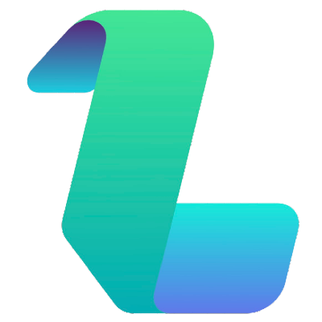

JL
PhD Student · CIPLAB, Yonsei University
Jiwoo Lee
3D Vision & Robotics
Thank you for visiting my page. I am a PhD student at CIPLAB, Yonsei University, advised by Prof. Seon Joo Kim. My work focuses on 3D vision and robotics — enabling machines to perceive and understand the three-dimensional world as humans do.
🧊 3D Vision
🤖 Robotics
🧠 Spatial intelligence
Publications
Experience & Education
2026.01 – Present
PhD Student
CIPLAB · Yonsei University
3D vision and spatial understanding, advised by Prof. Seon Joo Kim.
2025.02 – 2025.08

Research Intern
KUAICV · Korea University
Computer vision research in the Korea University AI & Computer Vision Laboratory.
2023.10 – 2024.10

Co-Founder
Lett Team
Co-founded a startup and shipped two iOS apps — Pzzk and Wemby.
2023.04 – 2023.09
2021.09 – 2023.03
Military Service
Republic of Korea Army